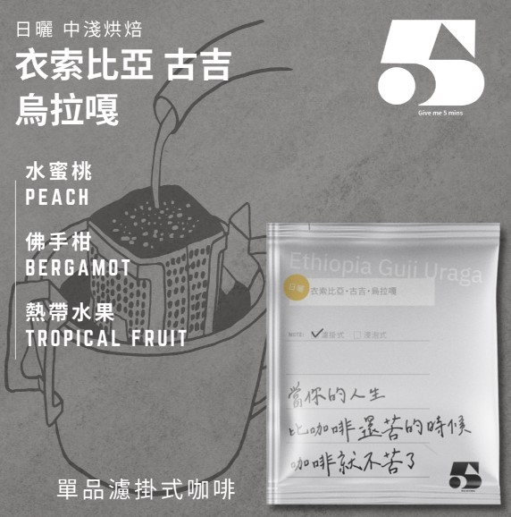
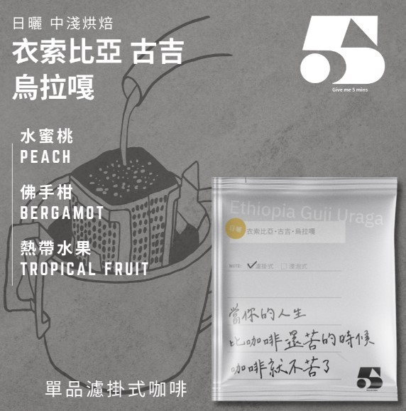

關於咖啡，我想說...
在這喧囂繁忙的生活環境，咖啡已經成為多數人的一部分，好比在早晨陽光的擁抱中，咖啡的清香驅散了我們那纏人的睡意；在午後夕照的怠緩中，咖啡的甜味讓我們有充足的精神可以繼續奮鬥；在夜晚月光的沐浴下，咖啡的回甘來結束一天，讓我們的付出都能有回報。
咖啡陪伴著你我一天的旅途，不管我們在世界的何處，只要有一杯咖啡，都能讓我們在繼續努力下去，因為，咖啡就是我們最好的依靠。

 


在這喧囂繁忙的生活環境，咖啡已經成為多數人的一部分，好比在早晨陽光的擁抱中，咖啡的清香驅散了我們那纏人的睡意；在午後夕照的怠緩中，咖啡的甜味讓我們有充足的精神可以繼續奮鬥；在夜晚月光的沐浴下，咖啡的回甘來結束一天，讓我們的付出都能有回報。
咖啡陪伴著你我一天的旅途，不管我們在世界的何處，只要有一杯咖啡，都能讓我們在繼續努力下去，因為，咖啡就是我們最好的依靠。
創立此violet cafe品牌的原因是由ヴァイオレット・エヴァーガーデン中所衍生出來的，我們想帶給顧客們的感受，就是讓顧客可以把我們當成最信任的朋友，我們也秉持著，不管顧客在哪裡，我們都會以最真誠的服務，將最好的商品送到顧客的手上，這就是我們violet cafe堅持的地方。